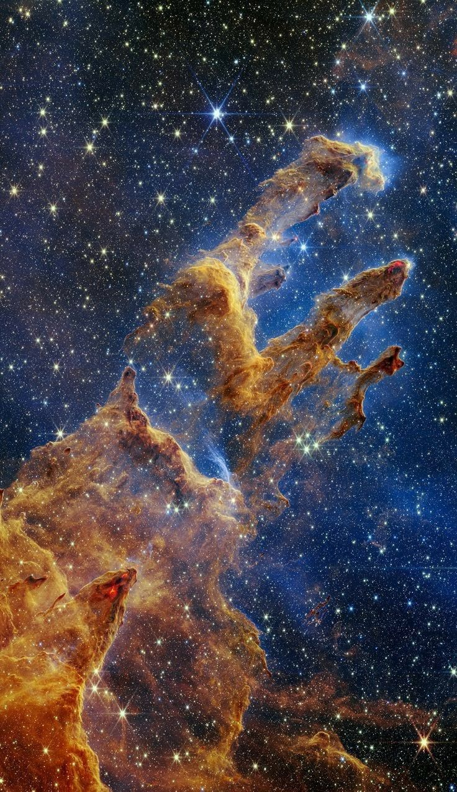
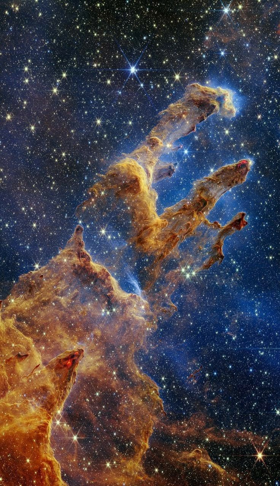

Evren
Nedir?
Evren, var olan her şeyi kapsayan sonsuz bir alandır. İçinde yıldızlar, gezegenler, galaksiler, karanlık madde, enerji ve zamanın kendisi bulunur. Evren sürekli genişler; yani içindeki boşluk ve gök cisimleri her geçen an daha da uzaklaşır.
Uzay Nedir?
Evrenin büyük kısmını boşluklar oluşturur; bu boşluklara genel olarak “uzay” denir. Uzay, Dünya atmosferinin ötesinde yer alan geniş ve neredeyse tamamen boş alanlardır. Parçacık yoğunluğu çok düşüktür, ancak az miktarda gaz, toz, plazma ve elektromanyetik ışınlar içerir. Uzay, yalnızca boş bir alan değildir; galaksiler, yıldızlar, gezegenler ve diğer gök cisimleri bu boşlukta yer alır.
BÜYÜK
PATLAMA
Bilim insanlarına göre evren yaklaşık 13.8 milyar yıl önce Büyük Patlama
(Big Bang) ile ortaya çıktı. Bu olay, evrenin inanılmaz bir hızla genişlemeye başladığı ilk andır.
Başlangıçta evren çok yoğundu ve yüksek sıcaklığa sahipti. Zamanla genişledikçe soğudu ve galaksiler, yıldızlar ve gezegenler oluştu. Büyük Patlama, evrenin geçmişi ve evrimini anlamamızda temel bir kavramdır.
EVRENİN YAPISI
- Galaksiler: Milyarlarca yıldız, gezegen ve toz bulutunun bir araya gelmesiyle oluşan dev yapılar. Örneğin bizim galaksimiz Samanyolu’dur.
- Yıldızlar: Kendi ışığını ve enerjisini üreten dev gaz toplarıdır. Güneş, Dünya’ya ışık ve ısı sağlar.
- Gezegenler: Yıldızların etrafında döner ve kendi ışıkları yoktur; yıldızlardan gelen ışığı yansıtır. Örneğin Dünya, Mars ve Jüpiter.

 

İnsanlığın Katkısı ve Etkisi
İnsanlar uzayı sadece gözlemlemekle kalmamış, aynı zamanda araştırmalar ve teknolojilerle aktif olarak katkıda bulunmuşlardır.
Keşif ve Araştırma
Teleskoplar, uzay sondaları ve robotik araçlar sayesinde uzak yıldızlar, gezegenler ve galaksiler gözlemlenmiştir.
Mars, Jüpiter ve diğer gezegenler hakkında bilgi sahibi olmak için insansız araçlar ve uydular kullanılmıştır.
UZAY
İNSANLIK
İnsanlar, uzayı araştırarak evrenin kökenini ve yapısını anlamaya çalışır. Uzay çalışmaları sayesinde:
- Yıldızların ve gezegenlerin yaşam koşulları öğrenilir.
- Galaksilerin hareketleri ve evrenin genişleme hızı ölçülür.
- Teknolojik gelişmeler (uydu, teleskop, iletişim sistemleri) sağlanır.
- Gelecekte uzayda yaşam ve kolonileşme potansiyeli araştırılır.

UZAY
TEKNOLOJİLERİ
Uydu teknolojileri sayesinde iletişim, navigasyon ve hava tahminleri geliştirilmiştir.
Uzay araştırmaları, tıbbi cihazlar, enerji sistemleri ve malzeme bilimi gibi alanlarda yenilikler sağlamıştır.